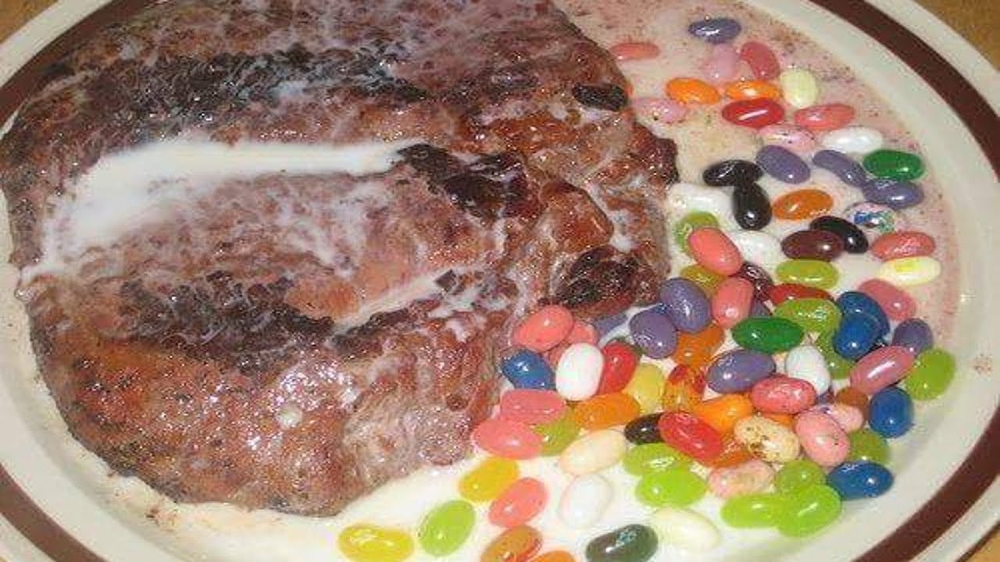

milk-steak
h

Homemade mix the milk and beans
This milk steak recipe makes super source with better protein milk beans.
Don't use meat that is leaner than 1000/20 for best results, and make sure
the meat is very cold. I prefer to cook these outdoors to avoid some impact
this can couses deseases when it is not give hygiene when some body eating
it.and don't consume it every day this much source of milk because you can
get an increase of callories in your body when some times you have lessimmunity you shouldbe illned
follow bellow the advice and guidline you
should follow before using these melk-steak
Ingredients
- 1litter milk
- 200 grams of beans,
if you need a help visit on www.yvesrutembeza.com
and get mor info of how to use it well
<<©>>copyright2023 yversrutembeza.com
all rights are reserved